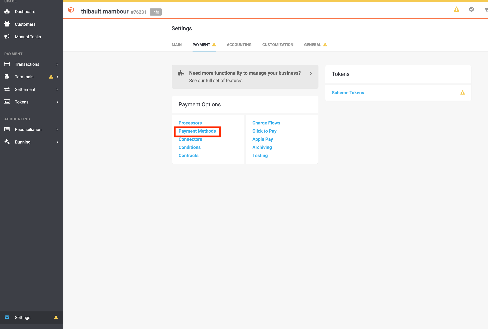
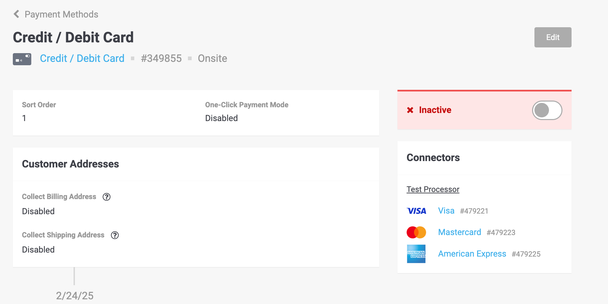
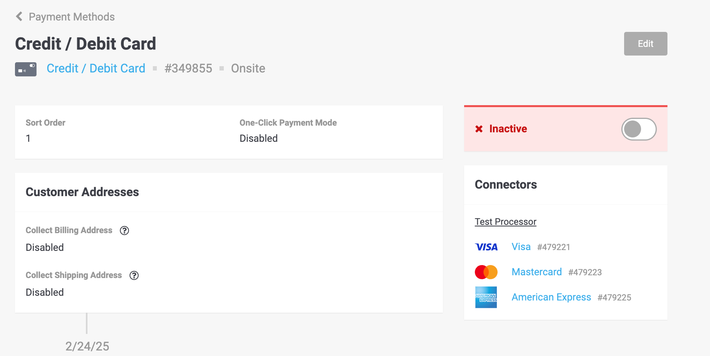
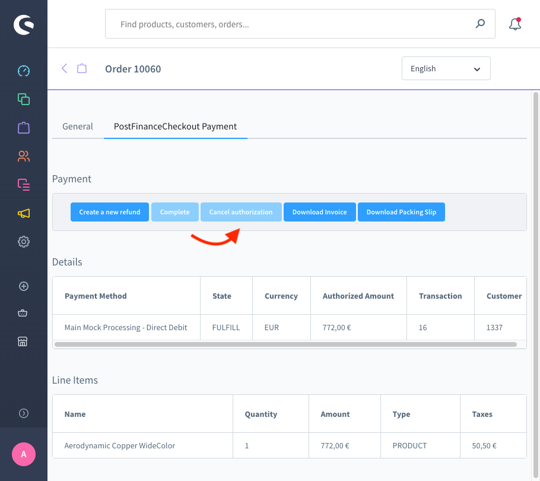

PostFinance Checkout Zahlungs-Plugin für Shopware 6
Documentation
1Übersicht
Das PostFinance Checkout Zahlungs-Plugin integriert moderne Zahlungsabwicklung in Shopware 6 und bietet Funktionen wie iFrame-basierte Zahlungen, Rückerstattungen, Erfassungen und PCI-Konformität. Es unterstützt die nahtlose Integration mit dem PostFinance Checkout Portal zur Verwaltung von Transaktionen und Zahlungsmethoden.
Wichtig: Bitte beachten Sie, dass nur Major- (z.B. 6.x.0.0) und Minor-Updates (z.B. 6.0.x.0) innerhalb von 2 Wochen nach der Veröffentlichung auf Kompatibilität getestet werden.
2Anforderungen
-
Shopware Version: 6.5.x, 6.6.x oder 6.7.x (see Kompatibilitätstabelle).
-
PHP: Mindestversion, wie von Ihrer Shopware-Installation erforderlich (z.B. 7.4+).
-
PostFinance Checkout Konto: Holen Sie sich die
Space ID,User IDund denAPI Keyvom PostFinance Checkout Portal (siehe Portal-Startanleitung).
3Kompatibilität
Shopware-Version |
Plugin-Version |
PHP-Version |
Unterstützt bis |
6.7.x |
7.x.x |
PHP 8.2 und 8.3 |
Laufend |
6.6.x |
6.x.x |
PHP 8.2 und 8.3 |
Dezember 2025 |
6.5.x – Veraltet |
5.x.x |
PHP 8.2 und 8.3 |
Oktober 2024 |
4Installation
4.1Via Marketplace
-
Melden Sie sich im Backend Ihres Shopware-Shops an..
-
Navigieren Sie zu Einstellungen → System → Plugins.
-
Klicken Sie auf den Menü-Caret und wählen Sie den Link Installieren des Plugins, um es zu installieren.
-
Aktivieren Sie das PostFinance Checkout Zahlungs-Plugin im Plugin-Manager.
4.2Via Composer (Recommended)
-
Navigieren Sie zu Ihrem Shopware-Stammverzeichnis.
-
Führen Sie Folgendes aus:
composer require postfinancecheckout/shopware-6 php bin/console plugin:refresh php bin/console plugin:install --activate --clearCache PostFinanceCheckout
4.3Via Composer (Recommended)
-
Laden Sie die neueste Version herunter.
-
Entpacken Sie die ZIP-Datei nach
custom/plugins/ -
Führen Sie Folgendes aus:
php bin/console plugin:refresh php bin/console plugin:install --activate --clearCache PostFinanceCheckout
4.4PostFinanceCheckout erscheint nicht in den Einstellungen
Folgender Befehl muss ausgeführt werden
bin/build-administration.sh5Update
5.1Via Administration
-
Gehe zu Shopware Admin > Erweiterungen > Meine Erweiterungen.
-
Suche nach PostFinanceCheckoutPayment.
-
Klicke auf Aktualisieren.
5.2Via CLI
-
Stelle die neuen Plugin-Dateien bereit (ersetze den Ordner
custom/plugins/PostFinanceCheckoutPaymentoder lade ein neues ZIP hoch/installiere es). -
Führe aus:
bin/console plugin:refresh bin/console plugin:update --clearCache PostFinanceCheckoutPayment bin/console cache:clear
6Portal-Startanleitung
Gehen Sie zu PostFinance Checkout und erstellen Sie ein Konto, falls Sie noch keines haben.
|
Tip
|
Wählen Sie das passende Abo aus – es sollte E-Commerce-Transaktionen unterstützen. |
6.1Erstellen Sie den API-Schlüssel:
-
Nach der Aktivierung Ihres Kontos navigieren Sie zu Account → Applikationsbenutzer

-
Klicken Sie auf Applikationsbenutzer erstellen
-
Geben Sie einen Namen für diesen API-Schlüssel an – ich werde Test Shop eingeben – und klicken Sie auf Applikationsbenutzer erstellen

-
Ihr Applikationsbenutzer wird dann erstellt. Kopieren Sie die User-ID und den Authentifizierungsschlüssel, da Sie diese benötigen, um Ihren Shop mit dem Portal zu verknüpfen

-
Abschliessend müssen Sie diesem Applikationsbenutzer bestimmte Berechtigungen erteilen, damit er mit Ihrem Space kommunizieren kann. Navigieren Sie dazu unter Rolle zu Verwalten.

-
Klicken Sie auf das + Zeichen neben Space-Roles.
-
Fügen Sie die Rolle “Space-Admin” hinzu und klicken Sie auf Rolle zuweisen.
TipBitte beachten Sie, dass das Laden der Rollen einige Sekunden dauern kann. -
Klicken Sie abschließend auf Rollen speichern; Sie müssen Ihr Passwort zur Bestätigung eingeben.

6.2Zahlungsmethoden einrichten
Sie können nun die gewünschten Zahlungsmethoden einrichten. Für Testzwecke verwenden wir den Bogus-Verarbeiter. Bitte beachten Sie, dass Sie für Produktions Transaktionen entweder unser Payfac-Angebot nutzen oder sich direkt mit einem bestimmten PSP (Worldline; Nexi; …) verbinden können.
-
Navigieren Sie zu Space → Einstellungen und klicken Sie auf Verarbeiter.

-
Klicken Sie auf Verarbeiter einrichten.
-
Wählen Sie den gewünschten Verarbeiter aus und klicken Sie auf Weiter.

-
Richten Sie den Namen ein, den Sie Ihrem Verarbeiter geben möchten – z.B. Test Verarbeiter – und klicken Sie auf Erstellen.

-
Wählen Sie alle Konnektoren aus welche Sie nutzen möchten und klicken Sie auf Speichern.
TipBitte beachten Sie, dass die Konnektoren doppelt erscheinen, da einer für Zahlungen über physische Terminals und einer für E-Commerce-Zahlungen bestimmt ist. 
Zahlungsmethoden sind nun im Portal verfügbar.
7Shop-Startanleitung
-
API-Zugangsdaten
-
Navigieren Sie zu Shopware Admin → Einstellungen → Erweiterungen → PostFinance Checkout und klicken Sie auf Speichern.
-
Geben Sie Ihre
Space ID,User ID, undAPI Keyein.-
Die Space-ID finden Sie unter Space – z.B. Space-ID = 76231.

-
-
-
Zahlungsmethoden
Die an der Kasse verfügbaren Zahlungsmethoden werden vom PostFinance Checkout Portal gesteuert. Wenn Sie eine Zahlungsmethode deaktivieren möchten, müssen Sie diese Zahlungsmethode im Portal deaktivieren.
NoteBitte beachten Sie, dass aufgrund der Synchronisierung zwischen Portal und Shop dasselbe auch im Shop unter Einstellungen → Zahlungsmethoden möglich ist. -
Gehen Sie zu Ihrem Space → Einstellungen → Zahlung → Zahlarten
 -
Wählen Sie die Zahlungsmethode aus, die Sie deaktivieren möchten. Klicken Sie auf den Schieberegler, um sie zu deaktivieren → sie sollte inaktiv werden.
 Tip
TipWenn Sie nur einen Konnektor einer Zahlungsmethode deaktivieren möchten (z.B. Mastercard für eine Kreditkarte), gehen Sie zum Abschnitt Konnektor.
-
-
Optionen
-
Space View Id: Dieses Feld ermöglicht es Ihnen, benutzerdefinierte Stile auf das Zahlungsformular und die Zahlungsseite anzuwenden. Die Stile werden in Ihren Space-Einstellungen im Portal definiert.
NoteBitte beachten Sie, dass diese Option leer bleiben sollte, wenn Sie die Space View Id nicht verwenden. -
Integration: Die Einstellung Integrationsoptionen bestimmt, wie das Zahlungsformular während des Checkout-Prozesses angezeigt wird. Die folgenden Optionen sind verfügbar:
-
IFrame: Betten Sie das Zahlungsformular direkt in die Shopware-Checkout-Seite ein, um ein nahtloses Erlebnis zu gewährleisten.
-
Lightbox: Öffnet ein sicheres Popup-Fenster, in dem Kunden ihre Zahlung abschließen können, ohne die Checkout-Seite zu verlassen.
-
Payment Page: Leitet Kunden auf eine dedizierte Zahlungsseite weiter, die vom Zahlungsanbieter gehostet wird.
-
-
Line Item Consistency: Shopware berechnet Steuern auf Ebene der Einzelpositionen, was zu geringfügigen Abweichungen (typischerweise einige Cent) zwischen der Gesamtsteuer der Bestellung und dem angezeigten Preis führen kann. Diese Abweichung tritt aufgrund von Rundungsdifferenzen bei der Berechnung einzelner Einzelpositionen auf. Wenn die Einstellung "Konsistenz erzwingen" aktiviert ist, lehnt das Portal automatisch Bestellungen mit solchen Abweichungen ab. Um Probleme bei der Zahlungsabwicklung zu vermeiden, empfehlen wir, diese Einstellung zu deaktivieren, es sei denn, eine strenge Validierung der Gesamtsteuer ist erforderlich.
-
Bestellbestätigungs-E-Mail senden: Aktivieren Sie diese Option, um Bestellbestätigungs-E-Mails direkt von Shopware anstelle des Portals zu senden.

-
8Transaktionszustandsdiagramm
Der Zahlungsprozess von PostFinance Checkout ist für jede von Ihnen verarbeitbare Zahlungsmethode vollständig standardisiert. Dies gibt Ihnen die Möglichkeit, einfach eine Zahlungsmethode oder einen Prozessor hinzuzufügen, ohne Änderungen in Ihrer Shopware-Konfiguration vorzunehmen. Eine Übersicht über die Zustände und die Zahlungsprozesse von PostFinance Checkout finden Sie in de Zahlungsdokumentation.
Im folgenden Abschnitt geben wir Ihnen einen Überblick darüber, wie die PostFinance Checkout-Zustände in das Shopware-Zustandsdiagramm für Bestell- und Zahlungszustände abgebildet werden.
8.1Zustandsabbildung von Shopware-Bestellungen
Wir ändern derzeit nicht den Bestellstatus. Wir ändern nur den Zahlungsstatus und den Lieferstatus.
8.1.1Allgemeine Anmerkungen zu Bestellstatus
Wir empfehlen, dass Sie den Bestellstatus erst ändern, wenn der Zahlungsstatus einen Endzustand erreicht hat.
8.2Zustandsabbildung des Shopware-Zahlungsstatus
Nachfolgend finden Sie ein Diagramm, das den Zustandsprozess von Shopware für den Zahlungsstatus einschließlich zusätzlicher Informationen zu den Zustandsübergängen zeigt

-
Wenn die Transaktion in PostFinance Checkout
Authorizedist, wird der Shopware-Bestellzahlungsstatus alsIn Progressmarkiert. -
Wenn die Transaktion vor oder während des Autorisierungsprozesses fehlschlägt, wird der Shopware-Bestellzahlungsstatus als
Failedmarkiert. -
Wenn die Transaktion nach der
Authorizedfehlschlägt, wird der Shopware-Bestellzahlungsstatus alsCancelledmarkiert. -
Wenn die Transaktionsrechnung in PostFinance Checkout als
PaidoderNot Applicable, markiert ist, wird der Shopware-Bestellzahlungsstatus alsPaidmarkiert.
8.2.1Allgemeine Anmerkungen zu Zahlungsstatus
Wir empfehlen, dass Sie den Zahlungsstatus nicht manuell ändern. Wenn Sie dies tun, kann er vom Plugin erneut geändert werden.
8.3Zustandsabbildung des Shopware-Lieferstatus
Nachfolgend finden Sie ein Diagramm, das den Zustandsprozess des Shopware-Lieferstatus einschließlich zusätzlicher Informationen zu den Zustandsübergängen zeigt

-
Wenn die Transaktion in PostFinance Checkout den Status
Confirmedhat, wird der Shopware-Bestelllieferstatus alsHoldmarkiert. -
Wenn die Transaktion in PostFinance Checkout als
Fulfillmarkiert ist, wird der Shopware-Bestelllieferstatus alsOpenmarkiert. -
Wenn die Transaktion
Decline,FailedoderVoided, wird der Shopware-Bestelllieferstatus alsCancelledmarkiert.
9Transaktionsverwaltung
Sie können Transaktionen direkt im Shopware-Backend erfassen, stornieren und erstatten. Bitte beachten Sie, dass Ereignisse in Shopware synchronisiert werden, wenn Sie Transaktionen in PostFinance Checkout erstatten, ungültig machen oder erfassen. Es gibt jedoch einige Einschränkungen (siehe unten).
9.1Bestellung abschließen (erfassen)
Sie haben die Möglichkeit, dass Ihre Transaktionen nach der Bestellung nur autorisiert werden. In der Konfiguration des Konnektors haben Sie die Möglichkeit, sofern die Zahlungsmethode dies unterstützt, festzulegen, ob die Zahlung sofort oder verzögert abgeschlossen werden soll. Um eine Transaktion zu erfassen, öffnen Sie die Bestellung und klicken Sie auf die Schaltfläche "Abschließen".
|
Note
|
Wenn der Abschluss in PostFinance Checkout ausstehend ist, bleibt die Bestellung im Status "Ausstehend". |

Verzögerter Zahlungsabschluss
Händler haben oft den Fall, dass sie Transaktionen nur autorisieren und den Erfüllungsprozess erst starten möchten, wenn alle Artikel versandfähig sind. Dies ist auch mit PostFinance Checkout möglich. Es sollten jedoch bestimmte Prozesse befolgt werden. Wenn Sie den Zahlungsabschluss als verzögert konfiguriert haben, sollten Sie die Transaktion erfassen, bevor Sie den Versand einleiten, da ein Abschluss immer fehlschlagen kann. Wenn Sie sicherstellen möchten, dass Sie keine Artikel versenden, für die Sie nicht bezahlt wurden, sollten Sie den Versand verschieben, bis der Erfüllungsstatus erreicht ist. Anfangs befindet sich die Transaktion in PostFinance Checkout im Status Authorized und in Shopware im Status In Progress. Wenn Sie den Erfüllungsprozess starten möchten, stellen Sie sicher, dass Sie den Abschlussprozess wie oben beschrieben einleiten. Sobald der Abschluss erfolgreich war, wechselt die Bestellung in PostFinance Checkout in den Status Fulfill und in Shopware in den Status Paid. Sie können nun den Erfüllungsprozess starten.
9.2Transaktion stornieren
Um eine Transaktion zu stornieren machen, öffnen Sie die Bestellung und klicken Sie auf die Schaltfläche Cancel authorization.
|
Note
|
Sie können nur Transaktionen stornieren, die noch nicht abgeschlossen sind. |

9.3Rückerstattung einer Transaktion
Sie haben die Möglichkeit, bereits abgeschlossene Transaktionen zurückzuerstatten. Öffnen Sie dazu die erfasste Bestellung. Indem Sie auf die 3 Punkte (…) in einer Einzelposition klicken, können Sie die Einzelposition teilweise (wenn sie eine höhere Menge als 1 hat) oder die gesamte Einzelposition zurückerstatten. Falls die Zahlungsmethode keine Rückerstattungen unterstützt, sehen Sie nicht die Möglichkeit, Online-Rückerstattungen auszustellen.

Sie können beliebig viele einzelne Rückerstattungen durchführen, bis Sie den Gesamtbetrag der ursprünglichen Bestellung erreicht haben. Der Status der Bestellung wechselt dann automatisch auf "abgeschlossen".
|
Note
|
Es kann einige Zeit dauern, bis Sie die Rückerstattung in Shopware sehen. Rückerstattungen sind erst sichtbar, wenn sie erfolgreich verarbeitet wurden. |
9.4Bestellungen auf On Hold
Die Lieferung sollte nicht erfolgen, solange der Lieferstatus Hold ist. Dies tritt auf, wenn die Transaktion in PostFinance Checkout den Erfüllungsstatus nicht erreicht hat.
Dafür gibt es im Wesentlichen zwei Gründe:
-
Die Transaktion ist nicht abgeschlossen. In diesem Fall müssen Sie die Transaktion wie oben beschrieben abschließen.
-
Wir können nicht sagen, ob Sie die Bestellung erfüllen sollen. Die Lieferentscheidung erfolgt automatisch. Wenn dies nicht innerhalb des definierten Zeitrahmens erfolgt, generiert PostFinance Checkout eine manuelle Aufgabe, die Sie beachten und deren Anweisungen Sie befolgen sollten.
Weitere Informationen zu manuellen Aufgaben finden Sie in unserer Dokumentation zu manuellen Aufgaben..
9.5Einschränkungen der Synchronisierung zwischen PostFinance Checkout und Shopware
Bitte beachten Sie, dass Erfassungen, Stornierungen und Rückerstattungen, die in PostFinance Checkout durchgeführt werden, synchronisiert werden. Es gibt jedoch einige Einschränkungen. In PostFinance Checkout können Sie den Einzelpreis und die Menge gleichzeitig ändern. Dies ist im Shopware-Backend nicht möglich. Wir empfehlen daher, die Rückerstattungen immer im Shopware-Backend und nicht in PostFinance Checkout durchzuführen. Wenn eine Rückerstattung nicht synchronisiert werden kann, wird sie an den Prozessor gesendet, aber es kann sein, dass Sie sie nicht in Ihrem Shopware-Backend sehen.
Weitere Informationen zu Rückerstattungen in PostFinance Checkout finden Sie in unserer Dokumentation zu Rückerstattungen..
9.6Tokenisierung
Falls die Zahlungsmethode die Tokenisierung unterstützt, können Sie die Zahlungsdetails Ihrer Kunden für zukünftige Einkäufe speichern. Um diese Funktion zu nutzen, stellen Sie sicher, dass der One-Click-Zahlungsmodus in Ihrer Zahlungsmethodenkonfiguration auf allow oder force eingestellt ist.
|
Note
|
Die Tokenisierung ist für Gast-Checkouts nicht verfügbar |
9.7Wiederkehrende Zahlungen
Shopware bietet das Paket "Shopware Commercial" mit zusätzlichen Funktionen, unter anderem Abonnements. Dieses Plugin unterstützt Zahlungen, die für Abonnements geeignet sind. Solange der Konnektor der Zahlungsmethode Tokenisierung unterstützt, kann er für Abonnements verwendet werden. Die wiederkehrende Zahlung wird vollständig vom Shopware Commercial Plugin verwaltet. Weitere Informationen finden Sie in deren Dokumentation.
9.8Hauptfunktionen
-
iFrame Integration: Betten Sie Zahlungsformulare direkt in Ihren Checkout ein.
-
Refunds & Captures: Lösen Sie vollständige/teilweise Rückerstattungen und Erfassungen von Shopware oder dem PostFinance Checkout Portal aus.
-
Multi-Store Support: Verwalten Sie Konfigurationen über mehrere Stores hinweg.
-
Automatic Updates: Zahlungsmethoden werden dynamisch über die PostFinance Checkout API synchronisiert.
-
Wiederkehrende Zahlungen: Führen Sie wiederkehrende Zahlungen mit Abonnements (Shopware Commercial) und PostFinanceCheckout durch.
9.9Fehlerbehebung
-
Logs: Überprüfen Sie Zahlungslogs mit:
COPY tail -f var/log/whitelabelname*.log -
Häufige Probleme:
-
Stellen Sie sicher, dass
composer update wallee/shopware-6nach Updates ausgeführt wird. -
Überprüfen Sie, ob die API-Zugangsdaten mit Ihrem PostFinance Checkout-Konto übereinstimmen.
-
9.10FAQs
F: Wie kann ich sicherstellen, dass die Verbindung zwischen Portal und Shop funktioniert?
A: Sie müssen überprüfen, ob die Webhooks korrekt erstellt wurden. Navigieren Sie dazu in Ihrem Space im Portal zu Einstellungen → Allgemein → Webhook-Listener.


F: Unterstützt dieses Plugin One-Click-Zahlungen? A: Ja, über die Tokenisierung im PostFinance Checkout Portal.
F: Wie handhabe ich die PCI-Konformität? A: Das Plugin verwendet die iFrame-Integration, wodurch die PCI-Anforderungen auf SAQ-A reduziert werden.
F: Unterstützt das Plugin Apple Pay? A: Ja, das Plugin unterstützt Wallets wie Apple Pay.
10Änderungsprotokoll
Versionsspezifische Updates finden Sie unter GitHub Releases.
11Mitwirken
Melden Sie Probleme über GitHub Issues.
Befolgen Sie den Shopware Shopware Plugin Base Guide für die Entwicklung.
12Support
Wenn Sie Hilfe benötigen, wenden Sie sich bitte an unseren support.